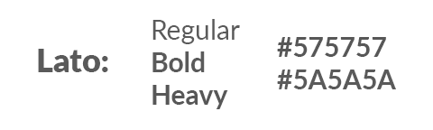

QSS Website
Web Design, UX/UI Case Study
Tools Used: Sketch 3, Adobe Photoshop

Comparison of designs of the incoming and outgoing website
As the incoming IT Director of Queen's Startup Summit, one of my tasks is to maintain the current website that we have running and revamp/redesign the website. Within this case study, we will going through my thought process on how I designed and developed the incoming webpage with the overall goal to attract more visitors and potential sponsors to the website.
What is wrong with the website?
A few things are wrong with this website:
Old landing page
- 1. When I glaced at the website, the landing page was way too dark and right away it lost my attention to scroll down any further.
- 2. It is not optimized for all screen resolution. We are in the age where webpages are responsive and optimized for viewing on any device whether it is on mobile, tablet or a laptop.
- 3. A few webpages look very busy, which takes away from any design the webpage I am viewing has.
How are we going to improve the website?
Colour Scheme
Font & Text Colour
Using the colour theory and the psychological meaning behind the chosen colours, the first thing I am going to do is to change the colour scheme of the landing page from a black/brown background to a bright and colourful background. The colour scheme I am running with is white, blue and green, because white makes the website a lot lighter and easy-going on the eyes, while blue means trustworthiness and it is one of the most common colours on a business attire, and green to give a refreshing and balance look. As we are still a new organization entering its fourth year and expanding, a lighter colour scheme will greatly help attract more visitors and potential sponsors to our website.
For the webpages that looked busy, I will be removing some of the unimportant details in order to keep it up with the design flow I envisioned.